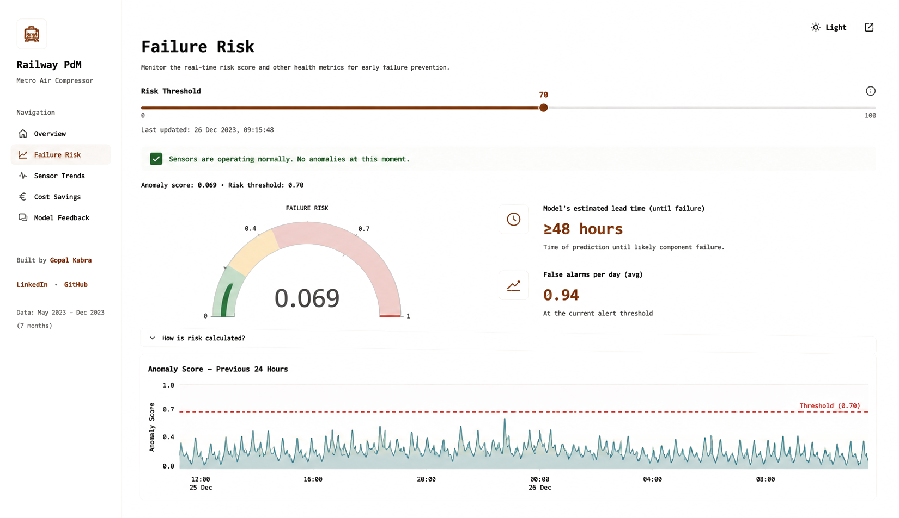
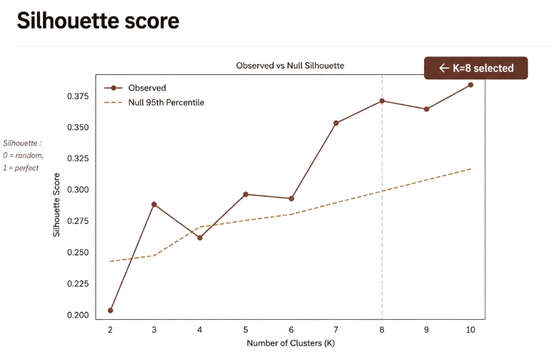

Projects
A closer look at four projects
Railway Predictive Maintenance
Catching air-compressor failures before they happen, using 7 months of sensor data from a Porto metro system.
Problem
A metro air compressor fails roughly every two months. Each unplanned breakdown costs €10,000 to €15,000 in emergency repairs and lost service.
Approach
Supervised models were the first attempt. XGBoost kept choking on the class imbalance, since failures made up less than 0.5% of the data. Switching to an Isolation Forest, trained only on what normal operation looks like, fixed it. About 179 features came from 15 onboard sensors: rolling averages, rate of change, cross-sensor ratios. The split between training, validation and test data followed time, not randomness, so the model never saw the future by accident.
What went wrong first
An early version of the model learned the maintenance schedule instead of the sensors. It flagged failures by noticing Monday mornings. Time-of-day features got cut after that.

Live view of the Railway PdM dashboard, tracking a Porto metro air compressor's anomaly score against the alert threshold.
It also beat a supervised XGBoost baseline, which caught only 1 of 2 failures with about 24 hours of lead time.
Longevity Economy, MSc thesis
Innovation and technological specialization: meeting intergenerational needs in the longevity economy.
Question
Does what venture-backed longevity startups build actually match the shape of the ageing problem they claim to solve?
Approach
Classified 224 venture-backed longevity startups by the functional needs they address: 24 sub-domains across 5 macro-domains. Ran K-medoids clustering on Jaccard similarity, then checked it against a 1,000-permutation null model. The empirical silhouette came out to 0.373 at K=8, against a null 95th percentile of 0.293.
Finding
66% of the ecosystem addresses health. Social participation and personal development produce no standalone configurations at all. That gap between what policy says is needed and what actually gets funded looks structural, not accidental. Supervised by Prof. Luca Gastaldi.

Observed clustering strength vs. a 1,000-permutation null model, by number of clusters (K). K=8 was selected as the final cluster count.
Customer segmentation & CRM analytics
RFM segmentation and K-means clustering on 50,000 customer records. Cohort analysis flagged three high-value at-risk cohorts, and the retention recommendations that followed cut churn by 20% and lifted 6-month retention by 25%.
Nestlé, financial and business analysis
Comparative analysis across liquidity, profitability and cost-structure metrics on a multi-division portfolio. Found a 15% cost-savings opportunity and turned it into a structured budget-reallocation recommendation.